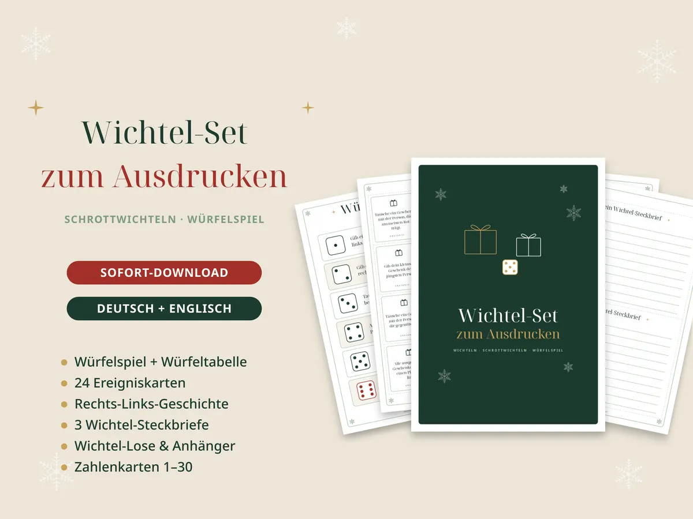
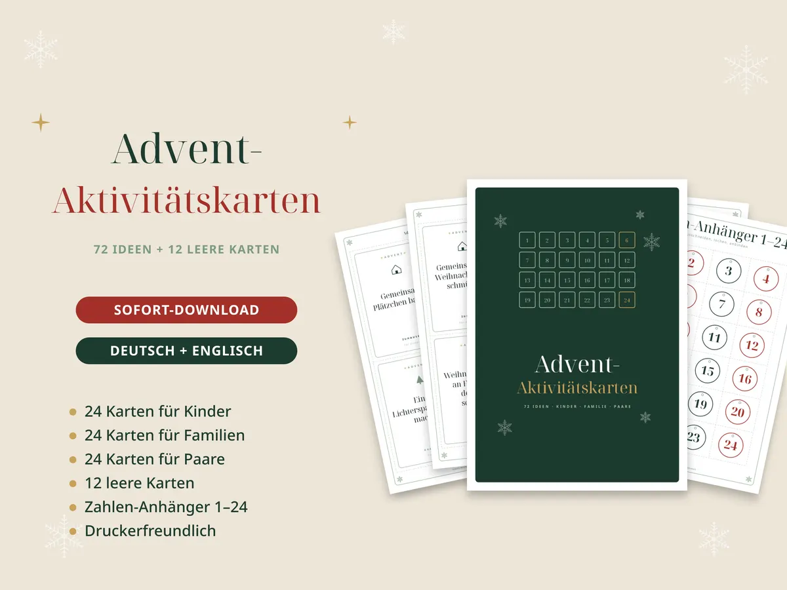
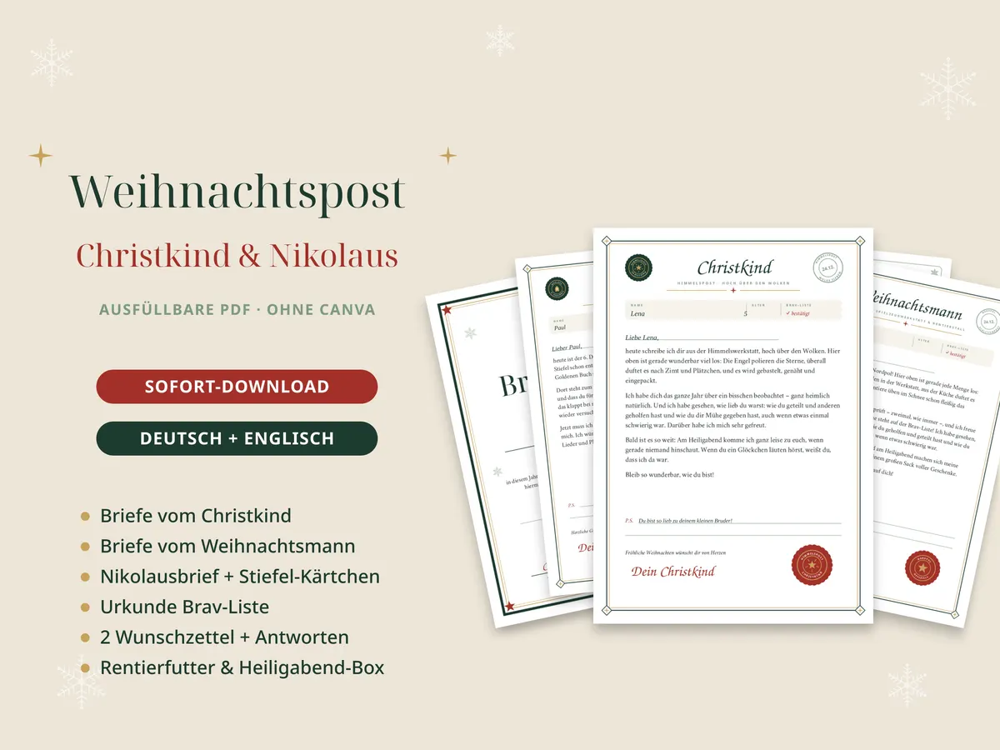
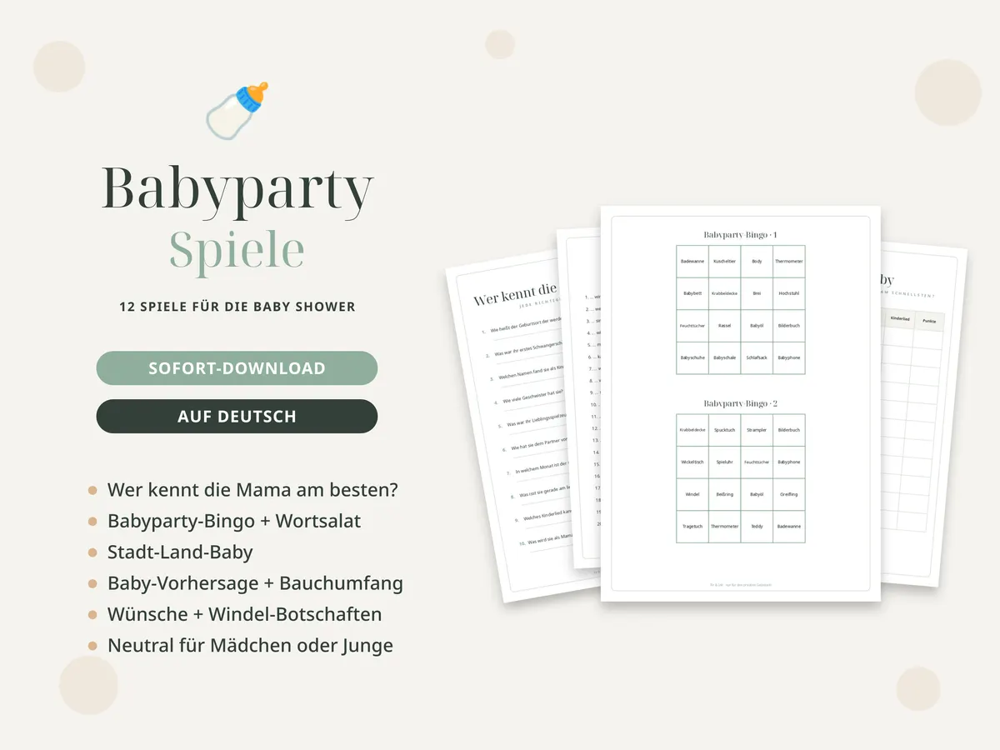
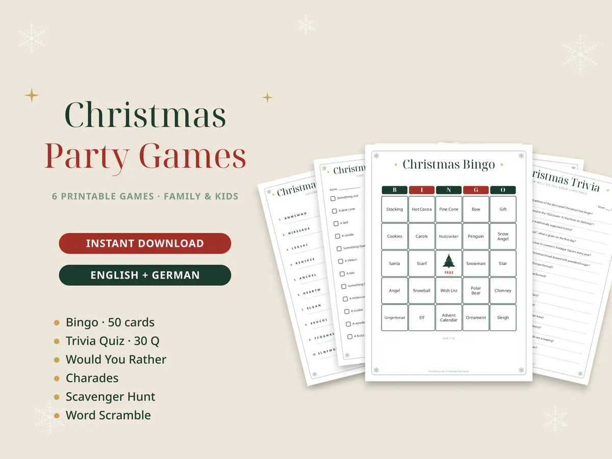

Ideen für Feste mit Familie und Freunden
Spiele, Schatzsuchen und Deko-Ideen für Weihnachten, Silvester, Wichteln, Ostern, Kindergeburtstag, JGA, Babyparty und Kommunion – mit kostenlosen Vorlagen zum Ausdrucken.
Weihnachten und Silvester

Wichteln: Regeln, Würfelspiel und Ideen für die WeihnachtsfeierWichteln einfach erklärt: klassisches Wichteln, Schrottwichteln mit Würfeln, Rechts-Links-Geschichte und Steck…Weihnachtsquiz: 25 Fragen mit Antworten für Familie und Weihnachtsfeier25 Weihnachtsquiz-Fragen mit Antworten – Bräuche, Lieder, Plätzchen, Geschichte und eine Kinderrunde. Zum Vorl…Silvester Spiele und eine Alternative zum BleigießenBleigießen ist verboten – was jetzt? Wachsgießen mit Deutungen, Silvester-Orakel, Bingo, Vorsätze raten und ei…
Adventskalender füllen: 24 Ideen ohne Kram (für Kinder, Familie und Paare)Adventskalender mit Erlebnissen statt Süßigkeiten: 24 Ideen für Kinder, Familie und Paare, plus Tipps zum Bast…
Brief vom Christkind oder Nikolaus: Formulierungen und IdeenEinen Brief vom Christkind, Weihnachtsmann oder Nikolaus schreiben: Mustertext, was hineingehört, Ideen für de…Spiele für die Weihnachtsfeier mit Kollegen: 10 Ideen, die alle mitmachenWeihnachtsfeier Spiele fürs Büro: Kennenlern-Bingo, Weihnachts-Duell, Emoji-Quiz, Zwei Wahrheiten und eine Lüg…Feste im ganzen Jahr
Oster-Schatzsuche für Kinder: Rätsel, Verstecke und AblaufSo wird die Ostereiersuche zum Abenteuer: Ablauf, Verstecke für drinnen und draußen, Rätsel in Reimen und eine…Schatzsuche zum Kindergeburtstag: Ablauf, Aufgaben und IdeenEine Schatzsuche für den Kindergeburtstag planen: Ablauf in 15 Minuten vorbereiten, 12 Aufgaben für Piraten, I…JGA Spiele: 12 Ideen, die lustig und nie peinlich sindJGA Spiele für den Junggesellinnenabschied, bei denen alle mitmachen wollen: Braut-Quiz, Wer würde eher, Foto-…

Babyparty Spiele: 12 Ideen für eine entspannte Baby ShowerBabyparty Spiele, die alle mögen: Mama-Quiz, Babyparty-Bingo, Baby-Vorhersage, Windel-Botschaften und ein Abla…Kommunion und Konfirmation feiern: Deko, Gästebuch und QuizIdeen für die Feier zur Erstkommunion oder Konfirmation: Willkommensschild, Gästebuch mit Fragen, Tischkarten …
Weihnachtsspiele für die ganze Familie: Ideen für HeiligabendWeihnachtsspiele für Kinder und Erwachsene: Weihnachts-Bingo, Quiz, Wichtel-Würfelspiel und Ideen für Heiligab…